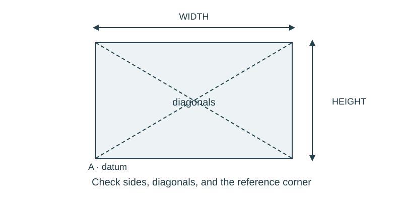

Job 11 · Inspect a layout discrepancy
An inspection report with signed differences and a corrected paper layout.
110 minutes • Tape measure + pocket notebook • Name: __________________ Date: __________
Materials: Paper-marker layout from Lesson 3 or fresh 30 × 40 in model, tapes, notebook.

Brief · 12 min
- A target is 40 in and a reading is 40 3/8 in. What does a positive difference tell the person correcting it?
- Set up a dated notebook spread: sketch and readings on the left; calculation, decision, test, and revision on the right. Mark small sketches NTS unless drawn to a chosen scale.
- Work in pairs and rotate roles. Each student keeps an individual notebook and performs a tool action and a calculation.
Measure · 18 min
- Lay out a 30 × 40 in rectangle with one deliberately misplaced corner, chosen by the teacher.
- Without seeing the planted error, measure all four sides, diagonals, and center coordinates.
- Record specified and measured values in separate columns.
Plan · 20 min
- Calculate signed differences and absolute magnitudes for all measured constraints.
- Mark pass/check for each criterion using the teacher’s classroom tolerance.
- Propose the smallest correction that addresses the pattern of readings.
Worked example
Requested length 40 in; measured 40 3/8 in; assigned tolerance ±1/4 in. Decide acceptance. Signed difference = measured − requested. +3/8 in is outside ±1/4 in; the dimension is too long. A 39 7/8-in reading differs by −1/8 in and is inside this interval.
Make · 28 min
- Move a corner or center marker according to the inspection plan.
- Remeasure affected sides and both diagonals.
- Have the inspecting pair sign a report naming measurements, dates, and remaining limits.
Test · 20 min
- Each decision matches the stated tolerance, including the exact boundary.
- Both before and after readings are retained.
- The report distinguishes an actual reading from a predicted correction.
Explain · 12 min
- Complete the individual exit below before discussing answers.
- Add the test result, revision, and notebook page reference to your response. Use the notebook as evidence rather than retyping every page.
- Save the three selected responses and submit the lesson for teacher review. Show your physical work and notebook to the teacher. Clean up and return shared supplies.
Individual exit
A center must be 18 in from datum with ±1/8 in tolerance. Evaluate 17 7/8 in and 18 3/16 in. Give the signed differences.